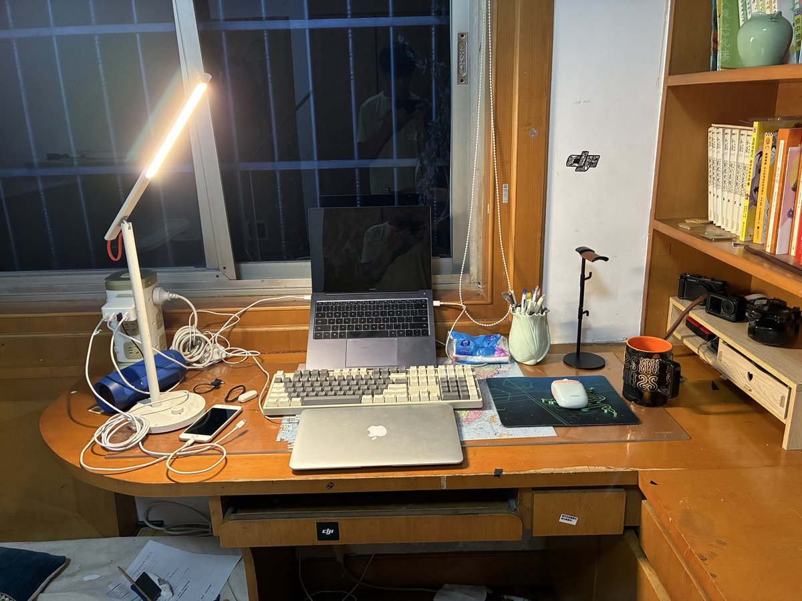

夜桜侵雪～
@Minecraftxfj
@jamyunfeng @conv1x1 呼市的诶！🤯

女の子
@jamyunfeng
扩列啊喵～
本人是一名准高一的高中生，生理性别男，心理性别null，平时喜欢倒腾电脑，摄影，拿个糖就能给我捕获走
一个未成年来自内蒙古呼和浩特的向你问好！生产日期：2011/02/18，保质期100年，记得妥善保存哦～
唠嗑？我有许许多多联系方式哦！直接私信即可哈，看到都会答复的咪 https://t.co/ShWyfIjt3x